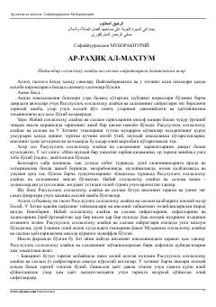

AAPayg'ambarimiz Muhammad sollallohu alayhi vasallamning hayoti va muborak siyratlariga bag'ishlangan fundamental asar.
Ushbu asar Islom payg'ambari Muhammad sollallohu alayhi vasallamning muborak hayoti va siyratlariga bag'ishlangan eng mashhur va ishonchli manbalardan biridir. Kitobda u zotning hayot yo'li, kurashlari va islom dinining tarqalish bosqichlari sahih rivoyatlar asosida yoritib berilgan. Muallif voqealarni ravon va tushunarli uslubda bayon qilgan bo'lib, kitobxonlar uchun chuqur ma'naviy ozuqa beradi.